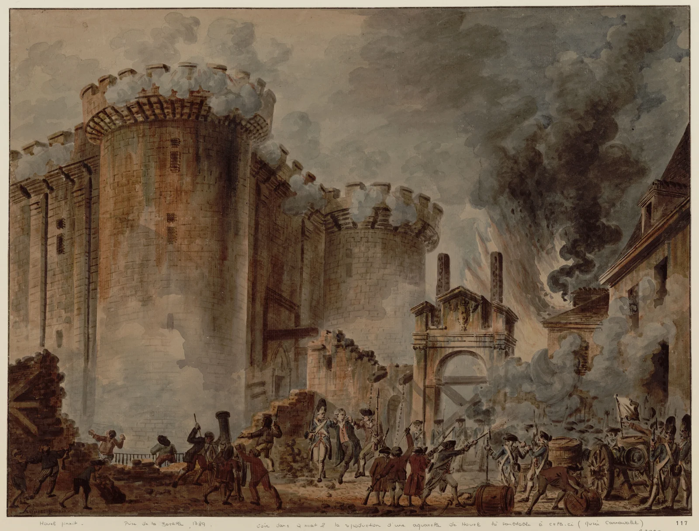

La Rivoluzione francese
Dall’Antico regime al colpo di Stato di Napoleone. Il diario degli eventi, le donne e gli uomini, i gruppi politici e i documenti di un decennio decisivo.
Entra nel percorso →gbprof · Percorsi tematici
Entrare nei problemi, incontrare le persone, interrogare le fonti. Percorsi per dare profondità a ciò che studiamo.

Dall’Antico regime al colpo di Stato di Napoleone. Il diario degli eventi, le donne e gli uomini, i gruppi politici e i documenti di un decennio decisivo.
Entra nel percorso →